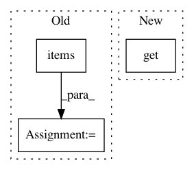

e2949a14f2bc5a9eaa689df314cba57f9cf61972,niftynet/io/image_sets_partitioner.py,ImageSetsPartitioner,grep_files_by_data_section,#ImageSetsPartitioner#Any#,221
Before Change
tf.logging.info(
"[%s] search file folders, writing csv file %s",
modality_name, csv_file)
section_properties = mod_spec.__dict__.items()
// grep files by section properties and write csv
try:
matcher = KeywordsMatching.from_tuple(
section_properties,
After Change
//////////////////////////////////////////////////////////////////////////////////////////
// writing csv file if path_to_search specified
////////////////////////////////////////////////////////////////////////////////////////////
if mod_spec.get("path_to_search", None):
if not temp_csv_file:
tf.logging.info(
"[%s] search file folders, writing csv file %s",
In pattern: SUPERPATTERN
Frequency: 3
Non-data size: 3
Instances
Project Name: NifTK/NiftyNet
Commit Name: e2949a14f2bc5a9eaa689df314cba57f9cf61972
Time: 2018-05-06
Author: wenqi.li@ucl.ac.uk
File Name: niftynet/io/image_sets_partitioner.py
Class Name: ImageSetsPartitioner
Method Name: grep_files_by_data_section
Project Name: ClimbsRocks/auto_ml
Commit Name: 046f6b64c1ac5cb6b03e5ee3cca26f9ddc84ae95
Time: 2016-08-12
Author: ClimbsBytes@gmail.com
File Name: auto_ml/utils.py
Class Name: BasicDataCleaning
Method Name: turn_strings_to_floats
Project Name: ray-project/ray
Commit Name: cb919c5e5c151f87616850c056402beefd5f7ff6
Time: 2020-09-04
Author: rkooo567@gmail.com
File Name: streaming/python/runtime/transfer.py
Class Name: DataReader
Method Name: __init__